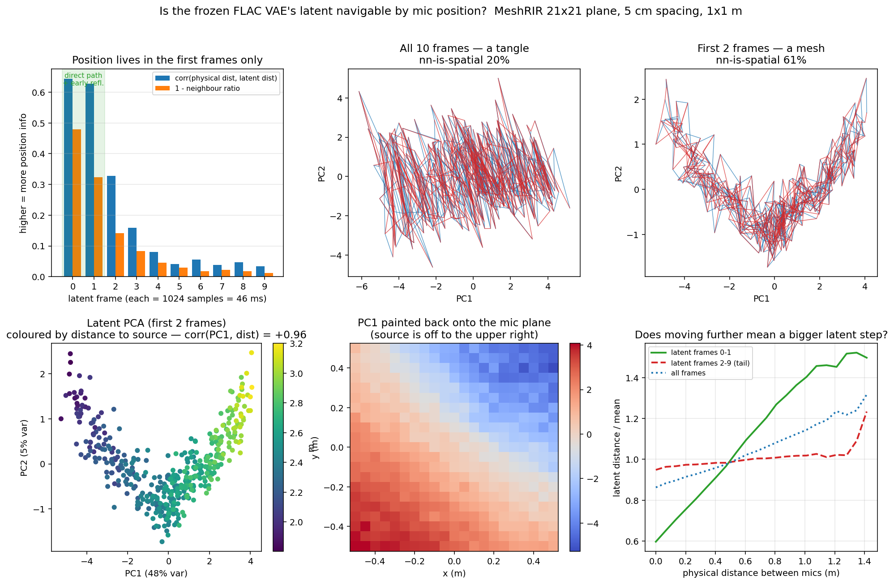

A room impulse response autoencoder, frozen and never fine-tuned, turns out to organise its latent space by microphone coordinate. Move the listener and the response moves with it — continuously, including through positions that were never measured.
Drag anywhere on the map. Small dots are the 441 real measurement positions; every other pixel is a decoded impulse response at a coordinate nobody measured.
Continuous: defined at every coordinate, including the three quarters of the map that were never measured.
loading field…
Each measured impulse response h(x) is pushed through the encoder to a point
z(x) — 320 numbers. Do that for all 441 microphones and you get 441 points. They are not
scattered: they form a smooth two-dimensional sheet inside that 320-dimensional space, indexed by
where the microphone was standing.
So “moving” means: pick any coordinate, including one between microphones, read the corresponding point off that sheet by interpolating its neighbours, and run it through the decoder. What comes back is a 10 240-sample impulse response at 22.05 kHz — a real waveform you can listen to, for a position nobody ever measured.
Every position on the map above is one such decode. At the 441 measured spots it approximates the real recording; everywhere in between it is invented, and the point of the demo is that it is invented smoothly.
The latent is 32 channels × 10 time frames, each frame covering 46 ms of the response. Position is not spread evenly across it — it sits almost entirely in the first two frames, the direct sound and the early reflections. The remaining eight, the reverberant tail, carry very little.
That is what the physics predicts. This is one room, so the late field is diffuse and decays the same way wherever you stand; there is no position information in it to find. It is also 80 % of the latent, which is why looking at the latent as a whole hides the signal.
Use only those first two frames and the leading direction of the latent correlates 0.988 with the direct sound's time of arrival. A frozen autoencoder, trained on a different dataset entirely, spends its main axis on time of flight.

Accuracy. Predicting a held-out microphone from its neighbours, simply copying the nearest measured response wins — comfortably. Microphones 5 cm apart produce responses that differ by less than the autoencoder's own reconstruction error, so the model has nothing to add. Only when the measurements thin out to roughly half a metre does latent interpolation start to win.
It does not preserve waveform phase. Sample-level correlation between an original response and its own reconstruction is 0.02–0.16, and no time shift recovers it. Envelope correlation, meanwhile, is 0.99. The cause is in the training configuration: the time-domain loss weight is set to exactly zero, so the model is optimised on multi-resolution spectral magnitude and never on the waveform itself.
It is a magnitude autoencoder. Room acoustics come back accurately — reverberation time to within a few percent, clarity to a few tenths of a decibel — while the fine time structure is reinvented. For listening this matters less than it sounds: the late field of a reverberation tail is perceptually defined by its energy envelope, which is why algorithmic reverbs work at all. The audible cost sits in the first ten milliseconds.